.png)
第六組
組員:林暐倫、程恩俞、張庭綸、許紫晶、劉可婕
| 遊戲下載 | 結案報告書 | 簡報 |
一、製作動機
在市面上，多數解謎平台遊戲都圍繞在抽象的機關或傳統元素(火、水、機械等)，較少將
「甜食、生態、宇宙」結合成完整世界觀。
本遊戲希望以「蜂蜜宇宙」作為核心，打造一個既可愛又具有邏輯深度的雙角色合作解謎遊戲。
製作這款遊戲的動機包含以下幾點：
1.
延續《冰火姐弟》的合作精神，透過兩位能力互補的角色，讓玩家在解謎過程中學會思考「合作」與「分工」，而不是單一角色通關。
2.
將蜂蜜與生態概念轉化為遊戲機制，蜂蜜不只是可愛的視覺元素，而是能延伸出「黏性、
流動」等多樣玩法，讓世界觀與玩法緊密結合。
3.
打造具有原創風格的宇宙甜點世界，以蜂巢星球、花粉叢等作為場景靈感，建立一個具有高度識別度、適合視覺設計與關卡設計發揮的遊戲世界。
4.
結合可愛外表與需要動腦的核心體驗，表面上是溫柔、甜美的風格，但實際遊玩時需要玩家觀察環境、理解規則、嘗試錯誤，讓遊戲同時吸引輕度與中度玩家。
二、遊戲目的
玩家在遊戲中將操控兩名來自「蜂蜜宇宙」的角色，穿梭於不同的蜂蜜星域，透過合作解謎，修復逐漸失衡的甜蜜能量系統。
核心遊戲目的：
。合作解謎通關關卡玩家必須同時運用兩名角色的能力，啟動機關、避開危險、改變環境狀態，才能抵達關卡終點。
。回收與穩定蜂蜜能量：每個關卡代表一個能量失衡的區域，玩家需要收集或引導蜂蜜能量，使星域恢復原本的秩序。
。探索蜂蜜宇宙的不同區域：隨著遊戲進行，玩家將前往不同風格的星球，例如：流動性極高的液態蜂蜜區、結晶化的糖巢遺跡、被污染或變質的苦蜜地帶。
。體驗「互相依賴」的成長感關卡設計會讓玩家清楚感受到：任何一個角色單獨行動都無法完成任務，只有理解彼此的能力限制，才能前進。
三、為什麼玩家會想玩這款遊戲
玩家會想要遊玩這款遊戲，是因為它以少見的「蜂蜜宇宙」作為主題，結合雙角色合作解謎玩法，帶來新鮮又直覺的遊戲體驗。溫暖可愛的視覺風格與甜蜜、生態、宇宙等元素，讓人第一眼就產生好奇與好感。遊戲延續類似《冰火姐弟》的合作核心，但透過蜂蜜的黏性、流動與變化設計出多樣化的關卡機制，使玩家不需花太多時間學習規則，卻仍能感受到解謎的深度與挑戰。關卡設計強調角色之間的互相依賴，讓玩家在不斷嘗試與配合中獲
得成就感。同時，修復蜂蜜宇宙能量失衡的目標，也賦予玩家情感動機，使遊戲不只是通關，而是一段溫柔又有意義的冒險旅程。
。雙角色合作解謎平台遊戲
。遊戲以雙人為主
。以電腦pc為主要遊玩器材
。風格以可愛、蜂蜜宇宙為主
在名為sugar
space的甜點太空宇宙當中有個名為「蜂蜜星球」的星球地域，蜂蜜星球當中無時無刻湧動著「蜂蜜之泉」，蜂蜜對他們來說相當重要的糧食以及能源來源。
但是突然有一天蜂蜜之泉不再湧動了，於是主角哈妮和班尼自告奮勇出發探險，決定於蜂蜜星球各地冒險蒐集蜂蜜能源，決心再次啟動蜂蜜之泉的湧動.......。
一、操作方式
。以WAD鍵為主
。左右移動為AD鍵、W向上跳躍
。碰觸蜂蜜罐即可累積蜂蜜數值
。R為重來
。esc為回主選單
。tab為設定
二、玩法介紹
本遊戲為一款雙角色合作解謎平台遊戲，玩家需同時操控兩名能力互補的角色，在蜂蜜宇宙的各個關卡中前進。
遊戲以平台跳躍為基礎，結合環境互動與解謎要素，玩家必須觀察關卡中的蜂蜜機制，如黏性、流動與結晶狀態，並善用角色能力改變環境條件，才能突破障礙。每個關卡中分布著多個「蜂蜜罐」作為蒐集目標，玩家需要透過精準操作與角色配合，取得位於高處或危險區域的蜂蜜罐。
蒐集蜂蜜罐不僅影響關卡完成度，也與世界解鎖、獎勵內容相關，鼓勵玩家反覆挑戰與完美通關。透過解謎、合作與蒐集的結合，玩家在前進的同時，逐步修復失衡的蜂蜜宇宙。
三、流程圖

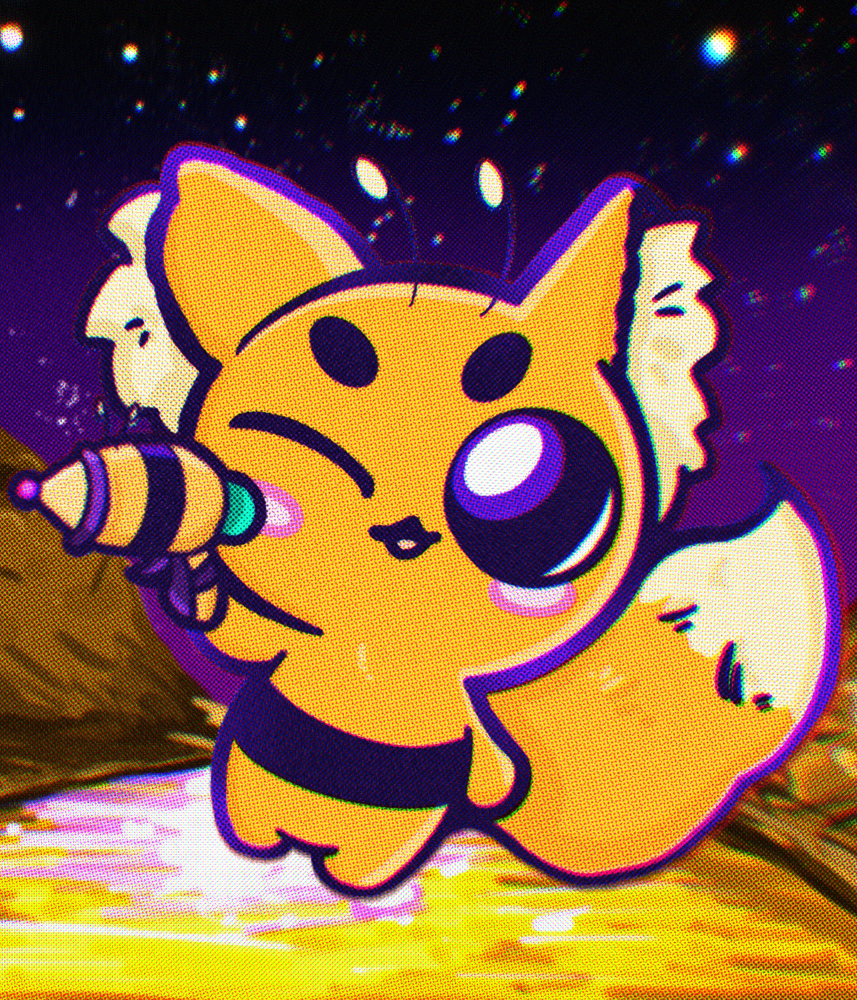 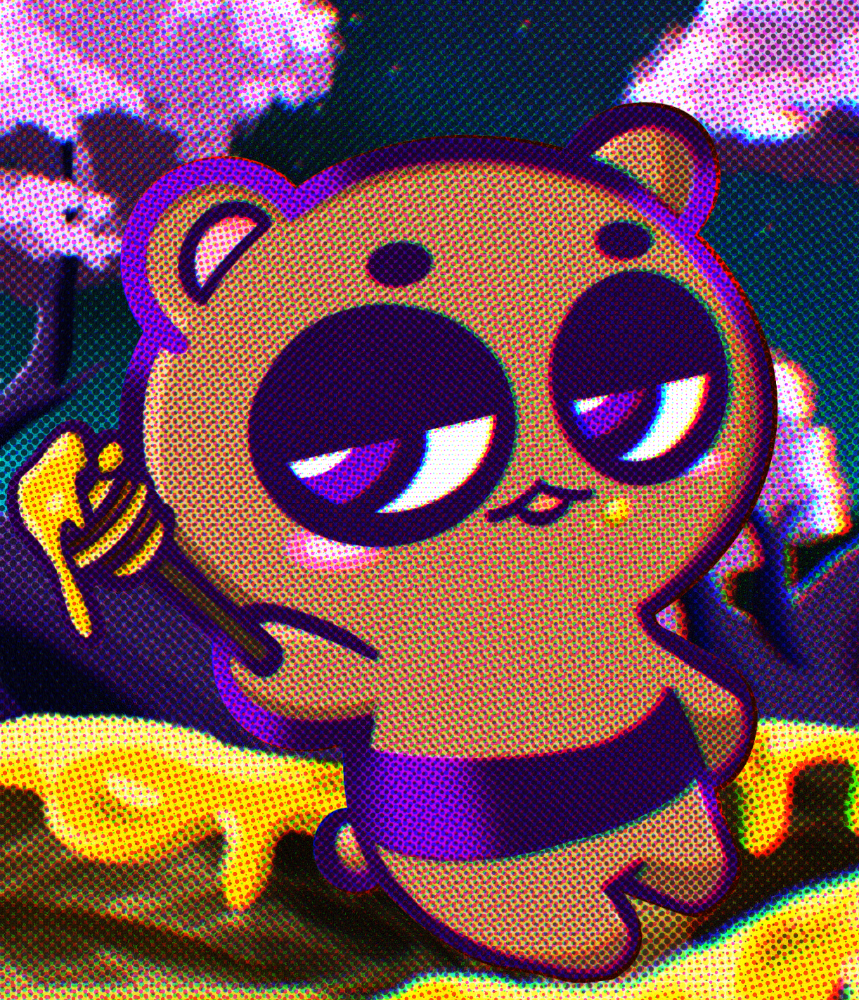
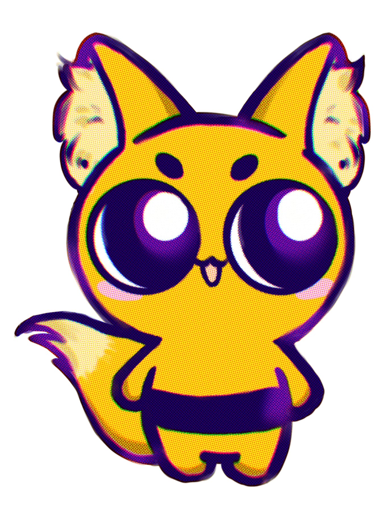 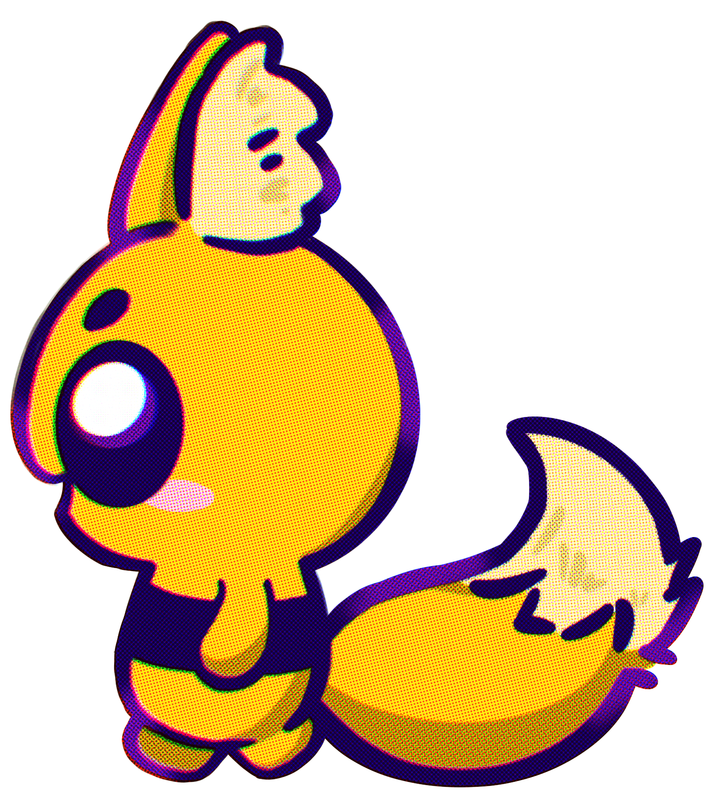
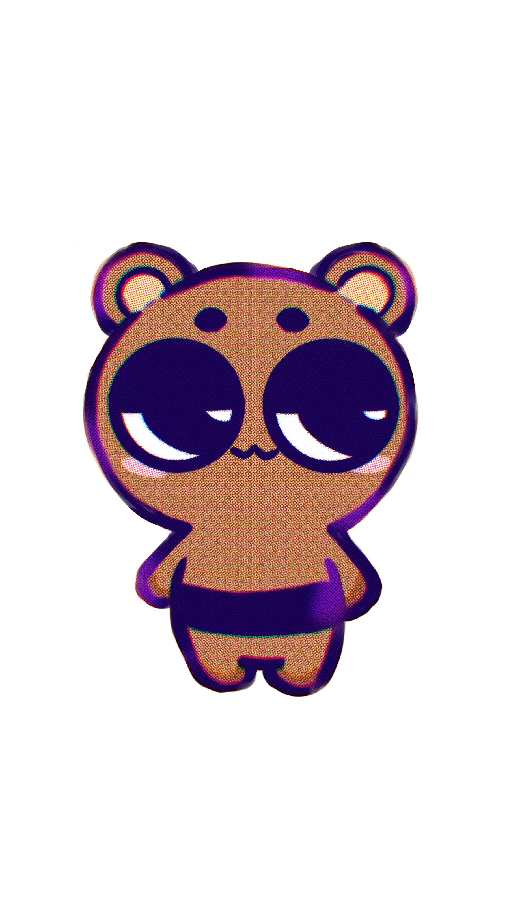 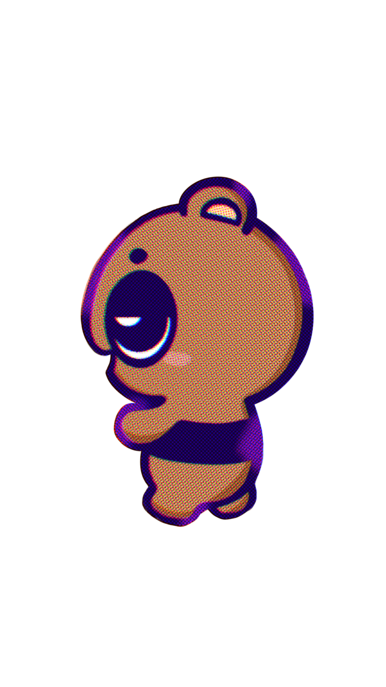
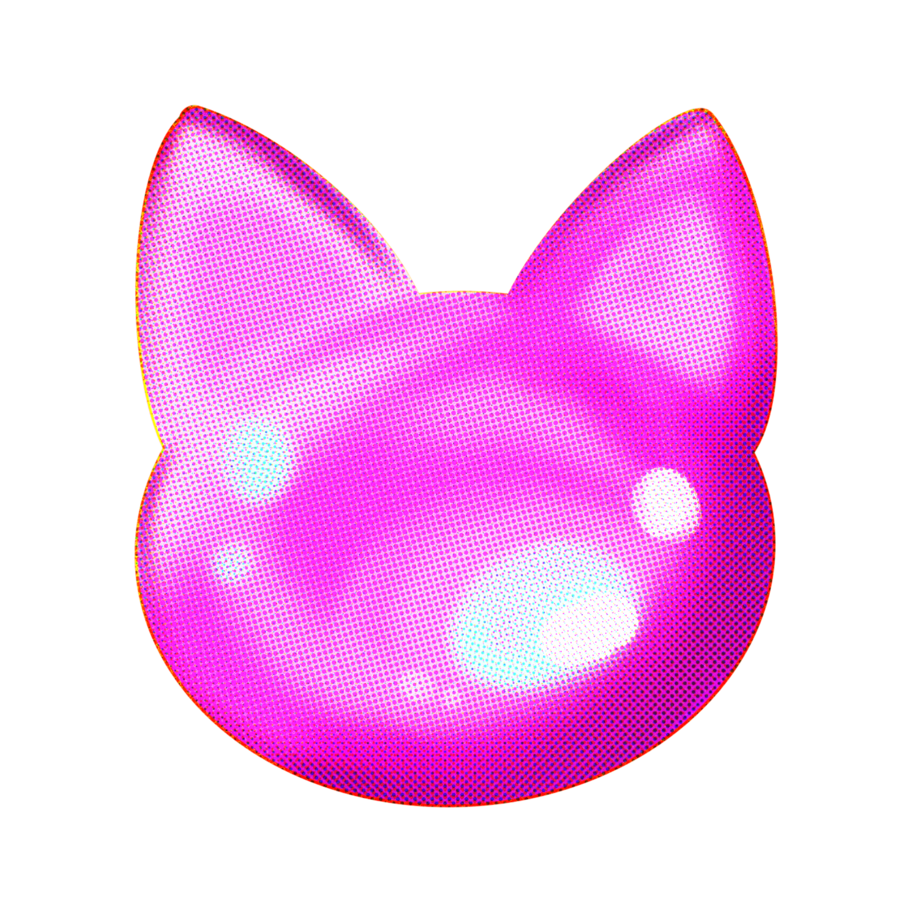.png)
這些結晶分為兩種類型——只與「哈尼」產生共鳴的哈尼結晶，以及僅能被「班尼」喚醒的班尼結晶。
單一的結晶無法發揮真正的力量。
唯有蒐集足夠數量的哈尼結晶與班尼結晶，並讓兩者融合，才能打造出傳說中的「蜂蜜罐」。
教學關卡指引：時間內集齊所有蜂巢結晶，玩家皆通過終點門即通關。
蜂蜜星球1 關卡指引：蜂蜜，既無處不在，也無法逃避，依但被黏住，將動彈 不得，謹慎行動，避免陷入困境。
蜂蜜星球2 關卡指引：速度，就是關鍵，結晶型態的蜂蜜能大幅提升移動速度。抓準路線，利用加速，一口氣突破障礙！
極光薄荷糖星球
關卡指引：這片區域充滿不穩定氣流。牆上出風口每3秒會釋放強風，抓準空檔穿越亂風區，被攻擊即失敗。地面出風口可透過按鈕啟動，善用它，讓風成為你的助力吧！
暗影甘草糖糖星球
關卡指引：小心頭上！角色每3秒會自動跳躍，撞上尖刺就失敗，抓準時機移動！別忽略藤蔓，它能帶你通過難關。
二、遊戲畫面
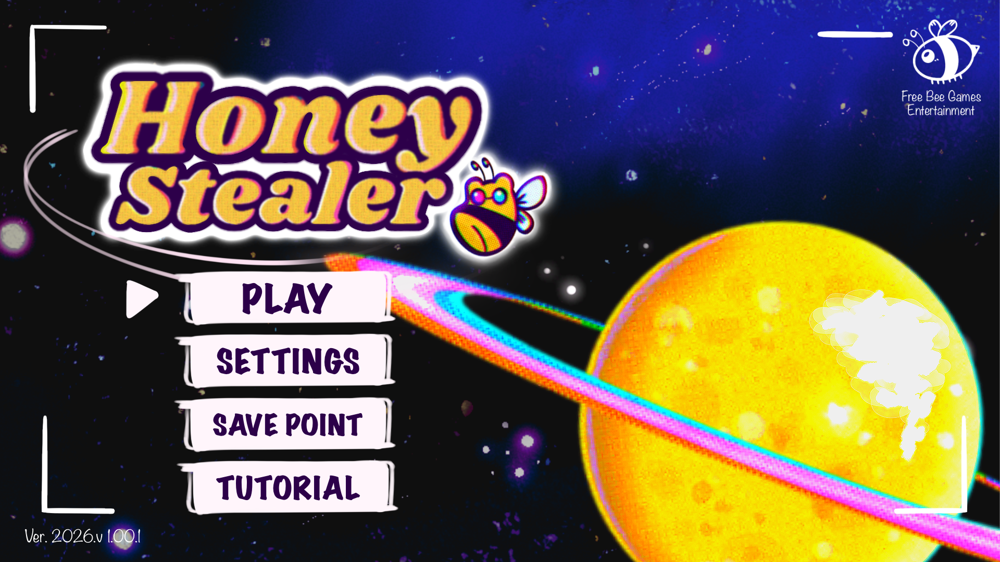
▲ 主畫面
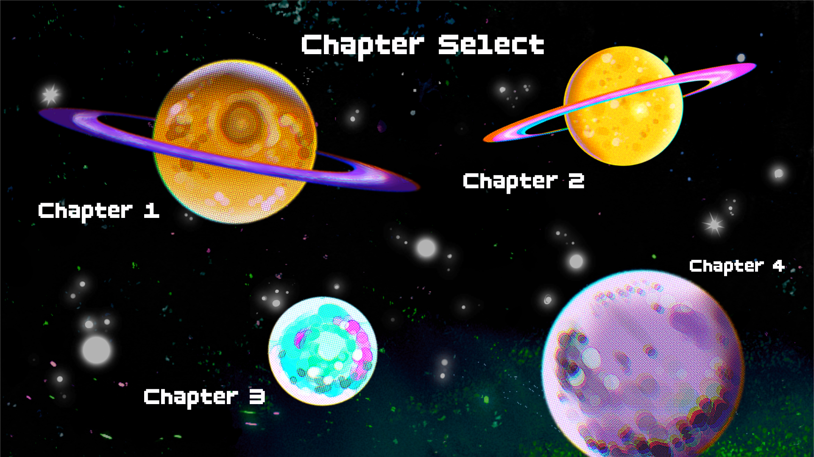
▲ 關卡選擇

▲ 教學關卡

▲ 第一關 蜂蜜星球-1

▲ 第二關 蜂蜜星球-2

▲ 第三關 極光薄荷糖星球

▲ 第四關 暗影甘草糖星球
S（Strengths｜優勢）
雙角色合作解謎玩法成熟、易上手
蜂蜜宇宙主題新穎、視覺可愛吸引人
蒐集蜂蜜罐增加重玩與挑戰性
W（Weaknesses｜劣勢）
單人模式操作負擔較高
劇情吸引力有限
類型玩法在市場上已有類似作品
O（Opportunities｜機會）
獨立遊戲市場持續成長
合作玩法吸引朋友或情侶一起遊玩
世界觀可延伸為周邊或教育應用
T（Threats｜威脅）
同類型合作解謎遊戲競爭多
玩家對創新期待高
行銷與曝光資源可能有限

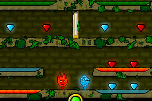
▲ 冰火姊弟
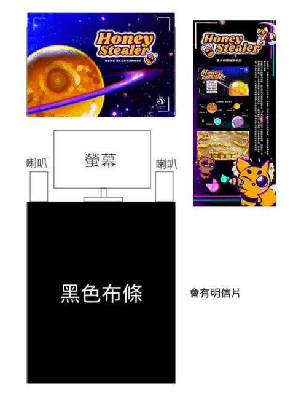
影片連結: https://youtu.be/kzYS_HkgFQE
組長：林暐倫-25%
組員：許紫晶-25%、劉可捷-25%、張庭綸-25%、
程恩俞-100%（程式組）
其實有鑑於時間上問題以及我們程式組只有一個人，遊戲的程式執行細緻度大約就是及格的程度，還不到非常精細；再來就是其實本來是希望關卡能夠至少有6～10關的，礙於時間上問題只能做出4關。
本來在關卡角色當中也想讓角色之間的合作互動性更加突出，但效果未能達成預期。
原來也有想要新增不同類型和來自不同星球的角色，讓玩家能夠自由選擇自己想要的角色，也因為時間上問題只做了2隻。
但整體來說風格至少算是統一，遊戲也是能夠運行。